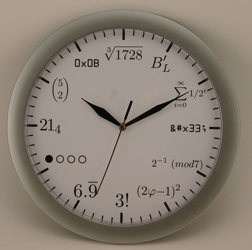

Шанувальникам математики
Перед вами завдання не з легких. Нумо, спробуйте їх вирішити!
№1. Розташуйте значення sin1, sin2, sin3 в порядку їх зростання (кут вимірюється в радіанах).
№2. Відомо, що площини α і β перетинаються по прямій c. Пряма l паралельна площині β і є перехресною з прямою c. Знайти, чи може пряма l
а) бути паралельною площині α;
б) перетинатись із площиною α;
в) лежати в площині α?
№3. Петро підіймається по сходах нерухомого ескалатора вгору за 90сек. Коли ескалатор працює, Петро дістається вгору за 60сек., стоячи нерухомо. За який час Петро вийде нагору по працюючому ескалатору?
№4. Знайти область означення функції
y = √(x-5) + 3√(5-x) + √(x2+5)
